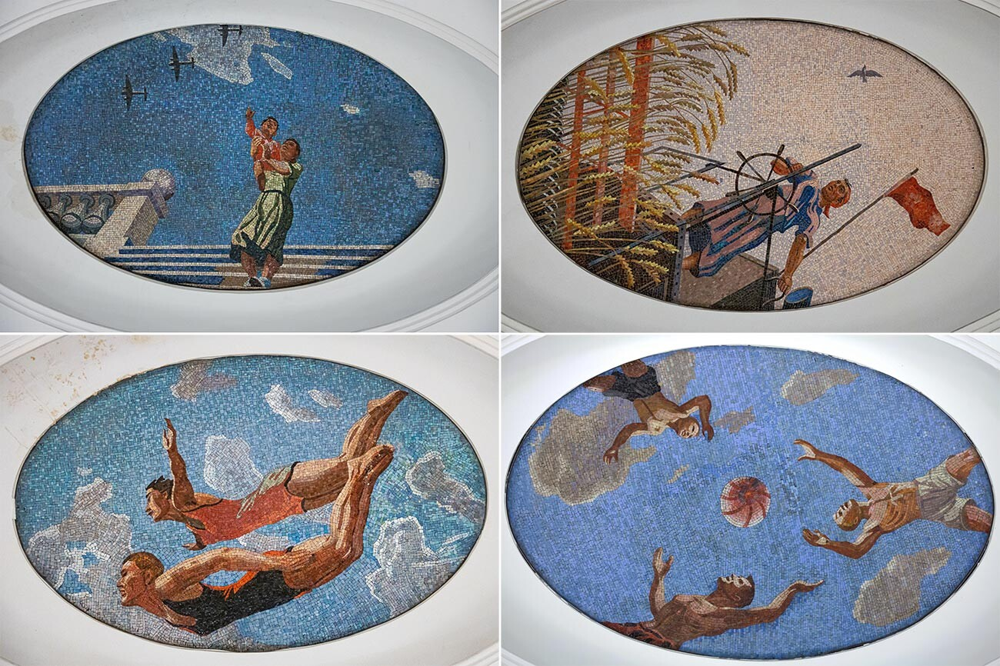

Apotheosis in socialist realist art functions as a deification of communist ideology, elevating political leaders and industrial workers to heroic, near-mythical status. This propaganda method creates an "apotheosis of labor" and power, portraying a "new man" building a communist future through utopian, idealized scenes.
